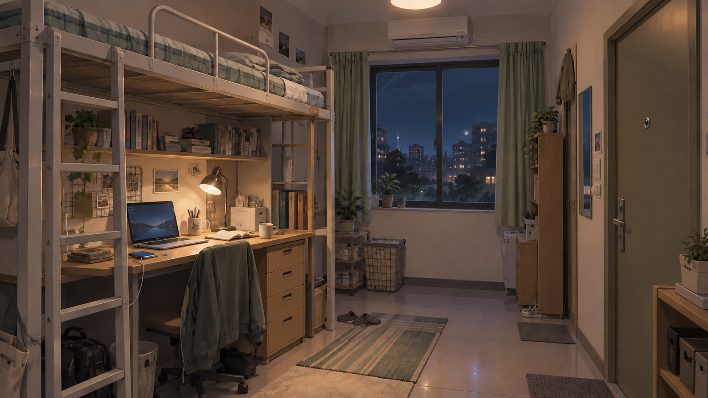
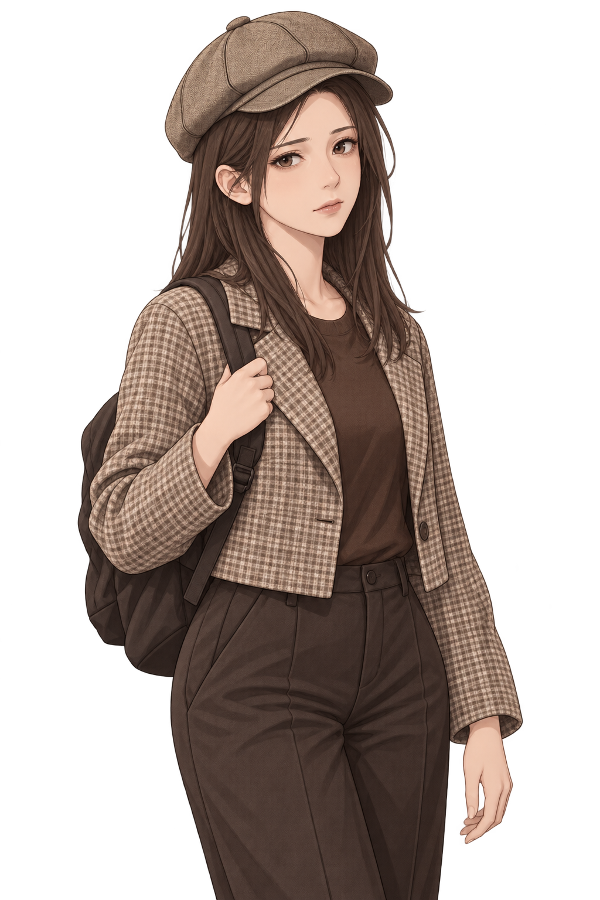

未保存的明天
经济学院 · 共享工位
21:00
十月的某个夜晚


移动鼠标寻找物品 · 侧边手机可以查看与回复消息
21:00
继续 ▸
0
第一章 / 空着的座位
本地存档
×
A NIGHT THAT HASN'T ENDED
未保存的明天
你只是想换个地方，继续写下去。
可那个空着的座位，似乎一直在等你。
声音：开启 ♫
开始这一晚 →
继续上次的夜晚
0.7 · 四人赴约版 · 场景调查 / 视觉小说 ｜ 点击物品，查看手机，继续对话
包含突然近景、惊吓音效、人物消失与即死结局。可在设置关闭声音与惊吓动画。